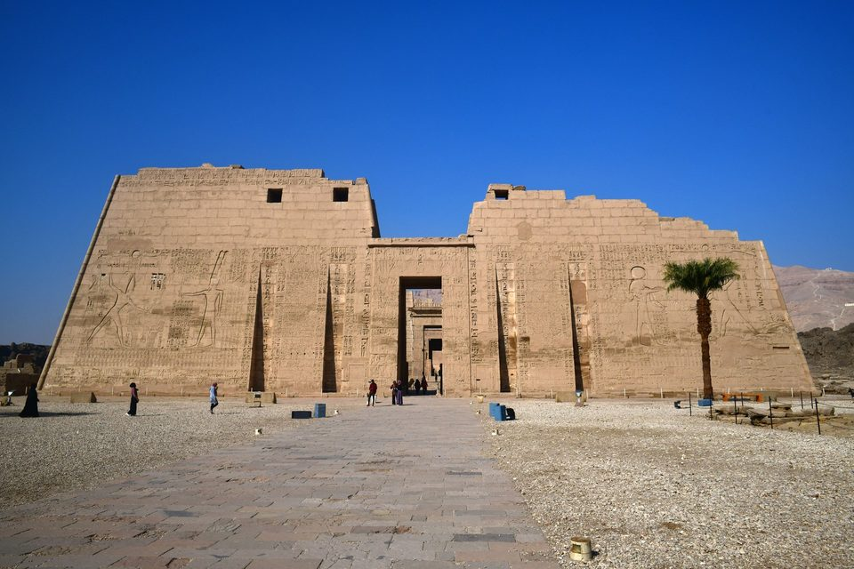

Egypt · Luxor
Medinet Habu audio guide
9 stops · 14 min
Billed in ZAR
Unlocks in this browser after payment.
Ramesses III's fortress-temple and its war reliefs. Listen here, or get the Earwise app to play as you walk.
Stops
- 1
The High Gate
In front of the eastern High Gate, the tall fortress-style gateway at the entrance of the temple precinct. This is stop 1 on the route.
Play0:00 / –:––Read along
Look up. This gateway is built to look like a fortress. Its towers imitate the fortified gatehouses of Syria, known as migdols. It once stood in a massive enclosure wall. The Egyptologist William Murnane, in his handbook to the site, gives that wall as about thirty-five feet thick and sixty feet high. This was a serious barrier.
The temple behind it had a grand name: "United with Eternity". It belonged to Ramesses the Third. Egypt's antiquities ministry ranks him first in fame among the kings of his dynasty, the Twentieth. He ruled for about thirty years in the twelfth century BC. One standard dating places his reign from 1187 to 1156 BC. Other datings differ by a few years.
Look at the outer faces of the gateway. The king strikes down captive enemies here. On one side are Nubians and Libyans. On the other are princes from western Asia and newcomers from the sea, among them the Sherden and the Philistines. Notice how the lower walls slope inward, and the doorway is set back in a recess. Both made it harder to attack. Carved heads of prisoners serve as supports, a message to anyone approaching.
This was more than a symbol. In the troubled years at the end of the New Kingdom, these walls gave shelter to the people of western Thebes. The site also became the administrative centre for the royal tomb builders of Deir el-Medina. In ancient times many visitors arrived by water, along a canal to a quay in front of this gate. In the rooms above the gate, scenes show the king at leisure with young women. They are a startling contrast to the war scenes outside.
Nobody is sure where the name Medinet Habu comes from. It may mean City of Hapu. Some scholars connect it with Amenhotep, son of Hapu, a wise royal official who was later worshipped as a god. He had his own temple close by.
- 2
The First Pylon
In front of the temple's first pylon, the great stone gateway into the temple proper, with the doorway between its two towers. This is stop 2 on the route.
Script and audio included when you buy - 3
The First Court and the Window of Appearances
Inside the first court, the open courtyard just beyond the first pylon, facing the south wall with its stair and balcony. This is stop 3 on the route.
Script and audio included when you buy - 4
The Palace
Outside the south wall of the temple, at the restored plan of the royal palace between the temple and the southern enclosure wall. This is stop 4 on the route.
Script and audio included when you buy - 5
The Second Court and the Coptic Church
In the middle of the second court, the inner courtyard with its pillars and raised portico. This is stop 5 on the route.
Script and audio included when you buy - 6
The Hypostyle Halls and the Treasury
In the first hypostyle hall, the roofless columned hall beyond the second court, with chapels to the north and the treasury door to the south. This is stop 6 on the route.
Script and audio included when you buy - 7
The North Wall: The Sea Peoples
Outside the temple's north wall, in front of the great war reliefs carved along its outer face. This is stop 7 on the route.
Script and audio included when you buy - 8
The Small Temple
In front of the small temple of Amun, just beside the entrance court, on the south side of the approach to the great temple. It is an older building that the later temple enclosed. This is stop 8 on the route.
Script and audio included when you buy - 9
The Chapels of the God's Wives of Amun
On the open ground between the small temple and the great temple's first pylon, in front of the two surviving chapels of the God's Wives of Amun. This is stop 9 on the route.
Script and audio included when you buy
On the map
All 9 stop pins for this guide are marked. Open map